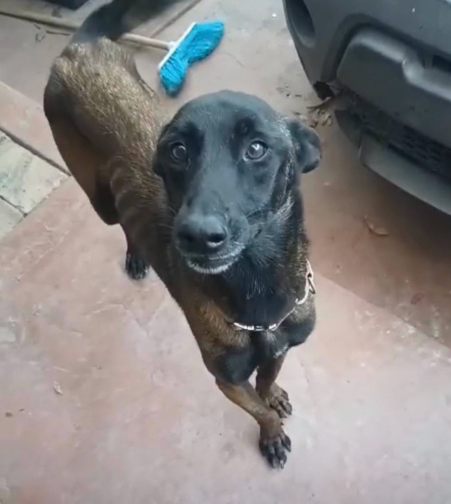
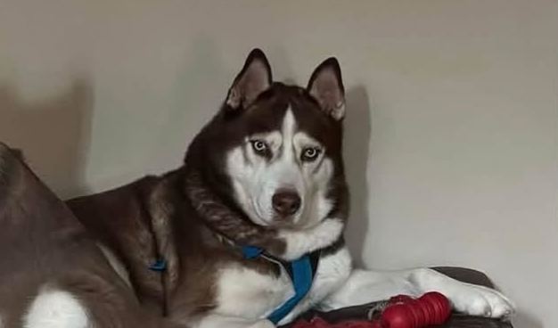
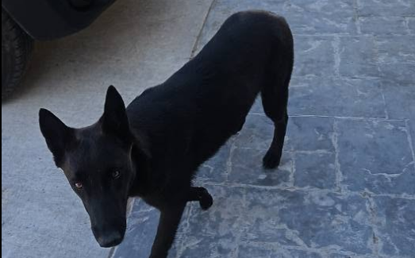
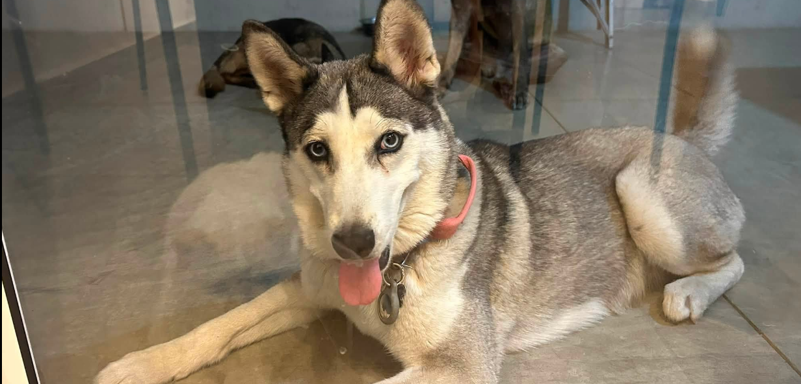
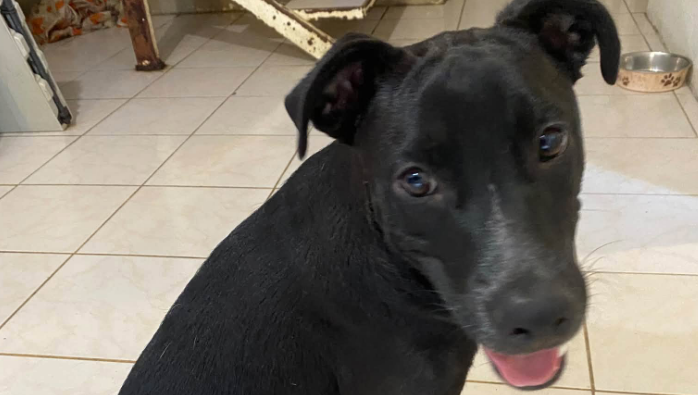
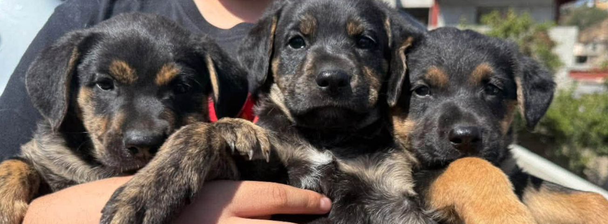

Sin nombre
Edad y Raza: ??? | ???


Edad y Raza: ??? | ???

Edad y Raza: 7 años | husky

Lugar y Raza: Playas de Tijuana | pastor belga malinois

Edad y Raza: 10 meses | Husky

Edad y Raza: 9 meses | ???
Preferentemente para ser perro único ya que es un poco ansioso con otros perros

Edades y Raza: 2 meses | mestizos con pastor alemán
3 hembras y 3 machos